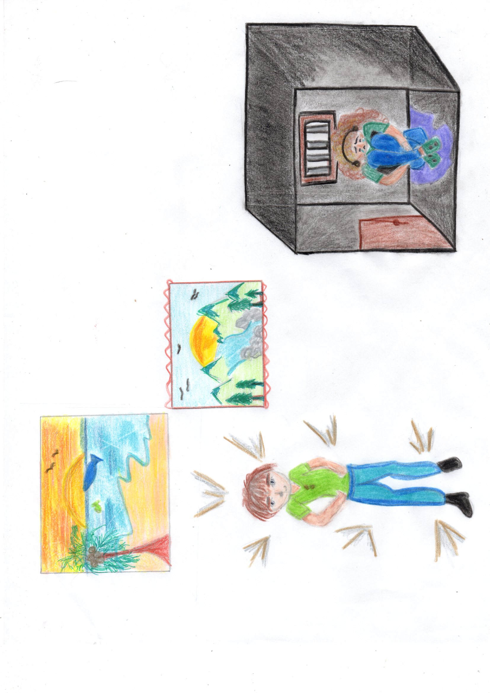

En esta obra quisimos mostrar el robo de una pintura de una mujer por un hombre, decidimos hacer esto ya que era algo muy recurrente en los inicios del arte, las robaban o eran compradas para que las mujeres no vieran la luz y los unicos alabados eran los hombres.